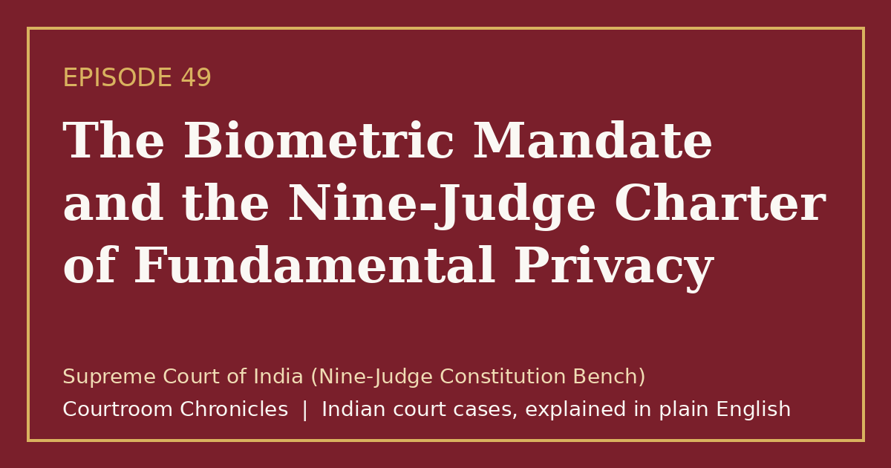

Episode 49
The Biometric Mandate and the Nine-Judge Charter of Fundamental Privacy
A unanimous nine-judge Constitution Bench declared privacy an intrinsic fundamental right protected against arbitrary state intrusion.
Constitutional lawFundamental rightsPrivacyNatural justice
#CourtroomChronicles#IndianLaw#RightToPrivacy#ConstitutionalLaw#DigitalRights#FundamentalRights#SupremeCourtOfIndia

Listen
- Court
- Supreme Court of India (Nine-Judge Constitution Bench)
- Date of Decision
- August 24, 2017
- Origin of Dispute
- Constitutional challenge to a nationwide biometric identification program launched without initial statutory backing
- Precedents Reconsidered
- Two earlier larger-bench rulings from 1954 and 1962 that had doubted constitutional privacy protection
- Bench Consensus
- Unanimous nine-to-zero verdict affirming privacy across six concurring opinions
Key takeaways
- Privacy is a constitutionally protected fundamental right covering the human body, personal information, and intimate life choices.
- The State cannot collect biometric or personal data without clear statutory authority, a legitimate public purpose, and proportional safeguards.
- This unanimous charter laid the constitutional foundation for later rulings protecting personal autonomy, digital data, and decisional freedom.
The case in brief
When the Union government rolled out a massive biometric identification program collecting fingerprints and iris scans from hundreds of millions of residents without an enabling parliamentary statute, a retired High Court judge petitioned the Supreme Court. The petitioner contended that compelling citizens to surrender intimate biological markers to a centralized database under threat of exclusion from essential welfare benefits violated personal liberty and bodily autonomy.
In response, the Union government argued before the court that the Constitution contained no explicit fundamental right to privacy, relying on two earlier larger-bench decisions from 1954 and 1962. Because smaller benches in later decades had recognized privacy in isolated contexts such as wiretapping and medical confidentiality, a three-judge bench referred the foundational constitutional question to an extraordinary nine-judge Constitution Bench.
On August 24, 2017, all nine judges unanimously held that the right to privacy is an intrinsic part of the right to life and personal liberty under Article 21 and the freedoms guaranteed across Part III of the Constitution. Overruling the discordant observations in the 1954 and 1962 precedents as well as a notorious 1976 emergency-era ruling, the bench established a strict three-part test of legality, legitimate state aim, and proportionality for any state intrusion into personal, informational, or decisional privacy.
Timeline
- Executive Notification
The Union government establishes a national identification authority by executive order without parliamentary legislation.
- Constitutional Petition Filed
A retired High Court judge moves the Supreme Court challenging mandatory biometric collection under Article 32.
- Reference to Larger Bench
A three-judge bench refers the conflicting precedents on the existence of a fundamental right to privacy to a larger bench.
- Unanimous Nine-Judge Verdict
A nine-judge Constitution Bench unanimously affirms that privacy is a fundamental right protected by the Constitution.
- Biometric Statute Reviewed
A five-judge Constitution Bench applies the proportionality standard to uphold welfare authentication while striking down private commercial linkage.
What the court decided
Reference answered unanimously (9:0); the right to privacy is declared an intrinsic fundamental right under Article 21 and Part III of the Constitution, overruling prior contrary larger-bench observations.
Key holdings
- Privacy is a natural, inalienable right inherent in human dignity and liberty rather than a privilege conferred by the State.
- The fundamental right to privacy encompasses bodily integrity, informational privacy, and personal autonomy over intimate choices.
- Earlier decisions from 1954 and 1962 denying a constitutional right to privacy were rooted in an obsolete siloed reading of fundamental rights and stand overruled.
- Any state action or law infringing privacy must satisfy a threefold test: existence of a valid law, a legitimate state aim, and proportionality between means and ends.
Legal principles
Proportionality Standard for Rights Restrictions
Any state measure that limits a fundamental right must be backed by enacted law, pursue a legitimate objective, be suitable and necessary, and avoid disproportionate harm.
In this case: The court mandated that future laws collecting or processing citizen data must satisfy strict proportionality and procedural safeguards against abuse.
Interrelationship of Fundamental Rights
Constitutional guarantees of equality, free expression, and personal liberty are not isolated silos; they overlap and reinforce one another.
In this case: The bench rejected the siloed approach of early constitutional cases, locating privacy across Articles 14, 19, and 21.
Informational Self-Determination
Individuals retain the right to control how their personal, biometric, and digital data are collected, stored, and disseminated by state or private actors.
In this case: The court recognized that in a digital society, unauthorized profiling and unchecked surveillance threaten individual autonomy and democratic dissent.
The law then and now
This constitutional reference interpreted fundamental rights under Articles 14, 19, and 21 of the Constitution of India, which remain unchanged and govern both physical and digital state actions.
Left: the law applied to this case. Right: the matching provision today (the new criminal codes apply only to offences on or after 1 July 2024).
- —
Unchanged. See all 9 episodes on this provision →
- —
Unchanged.
- —
Unchanged. See all 3 episodes on this provision →